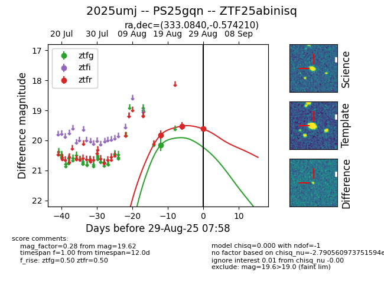

Target 2025umj at 2025-08-19 12:24, see:
TNS: wis-tns.org/object/2025umj
YSE: ziggy.ucolick.org/yse/transient_detail/2025umj
alt names
2025umj (yse,tns)
PS25gqn (panstarrs)
coordinates:
equatorial (ra, dec) = (333.0841,-0.57420)
galactic (l, b) = (61.0264,-43.51489)
photometry
last ps1::g=20.19, ps1::i=21.26, ps1::r=21.41, ps1::z=19.51
2 ps1::g, 2 ps1::i, 2 ps1::r, 1 ps1::z detections
